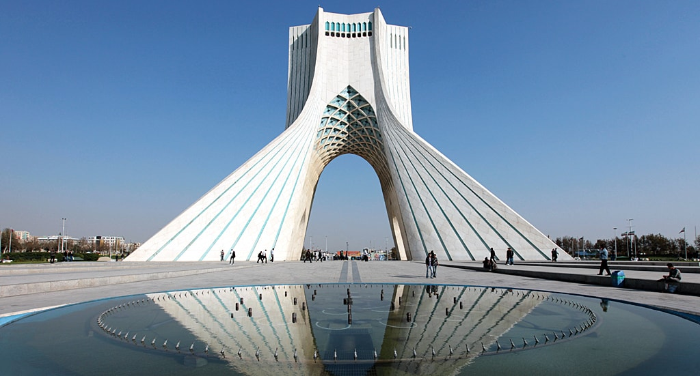
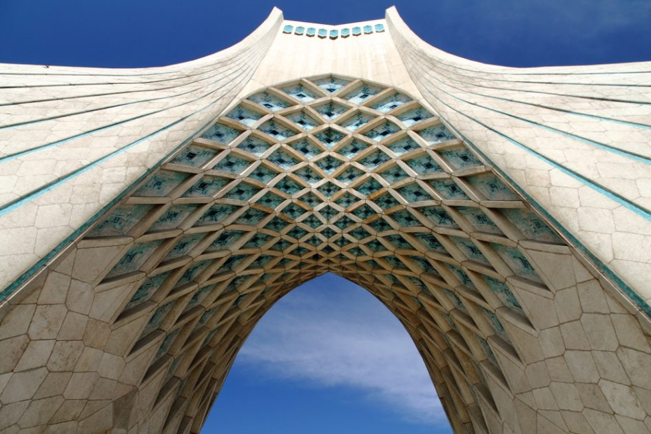
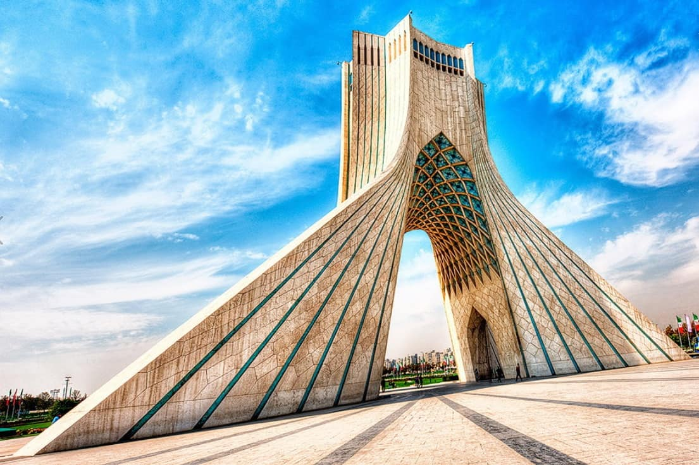
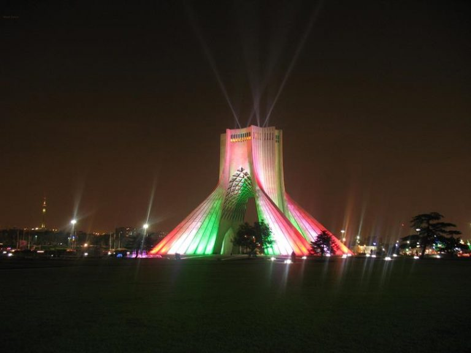
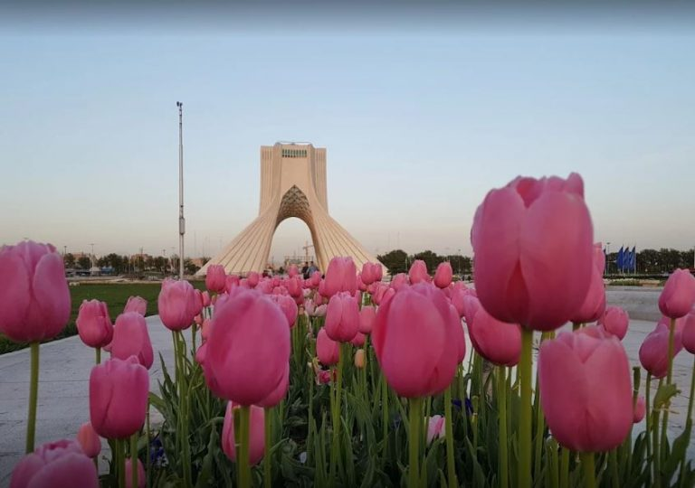

برج آزادي Azadi Tower هو أشهر معالم العاصمة الإيرانية طهران على الإطلاق، وكلمة آزادي بالفارسية تُعني الحرية، تأتي شهرة هذا البرج بسبب وقوعه في مدخل طهران تحديدًا في وسط ميدان يحمل نفس الاسم ميدان آزادي ، ويبلغ ارتفاع هذا البُرج نحو 50 مترًا وتم بنائه في 16 أكتوبر عام 1971 ميلاديًا
برج ازادي من معالم السياحة في ايران البارزة حيث يقصده زوار المدينة من السياح والسكان المحليين

مكان بُرج آزادي في مدخل طهران جعله واجهة شهيرة لواحدة من أبرز عواصم العالم، كما أن الساحة الضخمة التي تُحيط به وتحتضنه تُعد مكانًا مُناسبًا لإقامة الاحتفالات والمُناسبات الدينية والعسكرية وغيرها كل عام، عند تشييده سُمي البُرج باسم (النصب التذكاري للملك) أو بُرج .(شاهيدا) ولكن بعد الثورة الإسلامية التي عصفت بإيران تم تغير اسمه إلى بُرج الحرية

يتميز البُرج بروعة بنائه من مادة الرخام الأبيض ويُحيط به ساحة آزادي التي تعتبر من اهم الاماكن السياحية في طهران وتمتد لمساحة 50 ألف متر مربع، تمتلئ بالمساحات الخضراء الخلابة وعدد كبير من نوافير المياه ذات الأحجام والأشكال المُختلفة
أنشطة يمكنك ممارستها بالقرب من برج آزادي بطهران
التمتع بمشاهدة واحد من أهم المعالم السياحية في طهران والميادين الشهيرة ورؤية جمال ودقة التصميم الفريد وكيفية بناءه فهو نصب تذكاري يمزج بين الحداثة والتاريخ والعراقة

ميدان آزادي الذي يحتضن البرج يمتلئ بالعديد من المساحات الخضراء المُجهزة بشكل كبير للجلوس والاسترخاء بين الأزهار وجمال النوافير و سماع صوت الماء واللعب مع أطفالكم وقضاء أوقات حميمية وتناول المثلجات والآيس كريم
يمكنكم المشاركة والاستمتاع بحضور الاحتفالات الشعبية والأعياد والاحتفالات الرسمية الوطنية التي تقام عادة في الساحة فهي فرصة جيدة للتعرف اكثر على البلد وثقافته

بالتأكيد ستقومون بالتقاط عدد من الصور الفوتوغرافية الجميلة أثناء استمتاعكم بالمكان وغروب الشمس الرائع والذي تعكس ألوانه الجميلة على النصب ليصبح لونه الرخامي ذهبي !

: ساعات العمل
من الأحد وحتى الخميس من 9 صباحًا وحتى 8.15 مساءً
يوم الجمعة من 7.10 صباحًا وحتى 8.35 مساءً
يوم السبت مُغلق